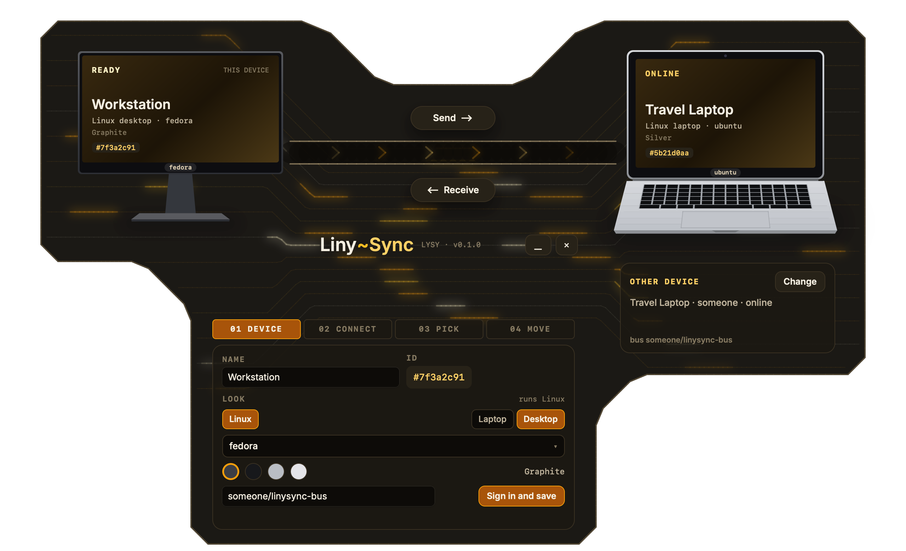
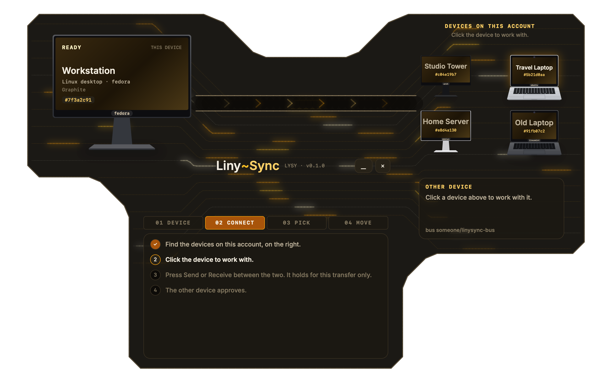
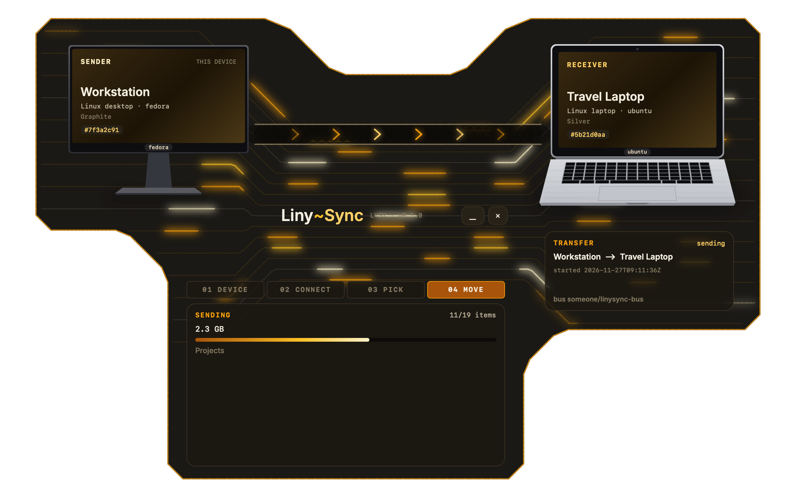

Her makine kendini çizer
Cihaz sekmesinde bu makineyi adlandırır ve nasıl çizileceğini seçersin: dört renkten birinde bir laptop ya da masaüstü; ekranın altındaki küçük bir rozette /etc/os-release'ten okunan dağıtımının adıyla. Çizimlerin hepsi özgün şekiller; logo yok.

Hesabındaki makineler
Bu hesaptaki cihazları bul, bus deponda kayıtlı her Linux makinesini listeler. Birini seç, göndermeyi ya da almayı seç; diğer makine sahibinin onaylayacağı ya da reddedeceği bir istek gösterir.

İşaretlediğin bir ağaç
Gönderen elindekini tarar. Alan taraf bunu türlere göre gruplanmış bir ağaç olarak, her öğenin nereye ineceğiyle birlikte görür; bir grubu işaretlemek içindeki her şeyi işaretler.

Doğrudan, ve kaldığı yerden sürer
Yalnızca seçilenler gider; ağın üzerinden makineden makineye, doğrulanmış bir XChaCha20-Poly1305 akışıyla. Bir dakika hiç bayt gelmezse bağlantı kopmuş sayılır ve alan taraf gelmeyenleri yeniden ister.

Ajanının iş yapabileceği bir not
Her öğe yeni ev klasörü altındaki yoluna iner; orada olan .before-linysync olarak saklanır. Sonra alan taraf GOAL.md'yi yazar: neyin nereye indiği, sorunlar, değişecek yollar ve paket listeleri; böylece ajanın aynı araçları bu dağıtımın yöneticisiyle kurar.